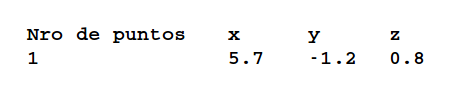

{% extends "base.html" %}


{% block content %}
	<div class="container-fluid">
		<div class="row">
	        <div class="col-xs-12 col-sm-12 col-md-12" style="padding-top: 20px;">
	            <t3>Enunciado</t3>    
	            <br>
	            <t2>
	                - Programe un Scrip que lleve los valores contenidos en un archivo html generado por slicer 3d a un txt con la siguiente estructura:
	            </t2>
	            <br>
	            <br>
	        		
	        </div>
	    </div>
    </div>
	<br>
	<br>	
	<div class="container-fluid">
		<div class="row">
			<div class="col-xs-12 col-sm-12 col-md-12 col-lg-12">	
				{% from "_macro.html" import render_field %}
				<hr>
				<form method="POST">
					<dl>
					{{ render_field(form.nombreArchivo, class='form-control btn-sm', placeholder="Ingresar el nombre del archivo") }}
					</dl>
					<div align="right" style="padding-top: 20px">
						<button class="btn btn-ghost btn-sm" type="submit" title="Generar archivo txt">
							Generar Txt
						</button>
					</div>
				</form>
				<hr>
			</div>
		</div>
	</div>

{% endblock %}

